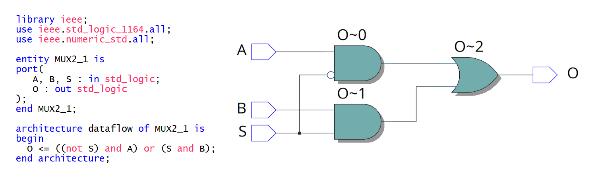

แนวทางการเรียนรู้การออกแบบวงจรด้วยชิป FPGA#
▷ ระบบสมองกลฝังตัวและชิป FPGA#
โดยทั่วไป การออกแบบระบบสมองกลฝังตัว (Embedded System Design) มักเกี่ยวข้องกับการใช้งานฮาร์ดแวร์หลายประเภท เช่น ชิปหรือไอซีประเภทต่าง ๆ รวมถึงซอฟต์แวร์ เพื่อใช้เป็นเครื่องมือในการออกแบบและพัฒนาระบบ
ถ้าพูดถึงการเขียนโปรแกรมระบบสมองกลฝังตัว คนส่วนใหญ่ก็จะนึกถึงชิปที่มี "ซีพียู" (CPU: Central Processing Unit) หรือ "โพรเซสเซอร์" (Processor) อยู่ภายใน เช่น ชิปประเภทไมโครคอนโทรลเลอร์ (หรือ เรียกว่า MCU: Microcontroller Unit) มีการใช้ภาษาคอมพิวเตอร์ เช่น C/C++ ในการเขียนโปรแกรมเพื่อกำหนดพฤติกรรมการทำงานของฮาร์ดแวร์ และให้ทำงานตามสถาปัตยกรรมของชุดคำสั่ง (ISA: Instruction Set Architecture) ที่ได้กำหนดไว้แล้ว ในหลายกรณี ก็มีการใช้ระบบปฏิบัติการร่วมด้วย เช่น RTOS (Real-time OS) สำหรับชิปไมโครคอนโทรลเลอร์ ขนาด 32 บิต
ชิปประเภทโพรเซสเซอร์ แบบหลายแกน (Multi-Core MPU: Microprocessor Unit) มักมีความสามารถในการประมวลผลสูงกว่า ความถี่ของซีพียูสูงกว่า และมีความจุของหน่วยความจำมากกว่าชิปไมโครคอนโทรลเลอร์ และสามารถใช้ Embedded Linux หรือ Android OS ได้
การเขียนโค้ด C/C++ สำหรับไมโครคอนโทรลเลอร์หรือซีพียู จะต้องมีการใช้คอมไพล์เลอร์ (Compiler) หรือ ชุดเครื่องมือที่เรียกว่า C/C++ Toolchain เพื่อทำหน้าที่แปลงซอร์สโค้ด ให้เป็นเฟิร์มแวร์ ซึ่งเป็นไฟล์แบบไบนารีที่ประกอบด้วยคำสั่งต่าง ๆ ตามชุดคำสั่งของซีพียูเป้าหมาย
การทำงานของซีพียูจะต้องอาศัยคำสั่ง (Instructions) ที่ได้มาจากหน่วยความจำสำหรับโปรแกรม (Program Memory) แต่ละคำสั่งจะมีส่วนที่ระบุว่า จะให้ซีพียูทำงานในลักษณะใด เช่น คำสั่งบวกหรือลบค่าตัวเลขที่อยู่ในรีจิสเตอร์โดยใช้วงจรที่เรียกว่า ALU (Arithmetic-Logic Unit) หรือการย้ายข้อมูลระหว่างรีจิสเตอร์และหน่วยความจำ เป็นต้น
การคำสั่งของซีพียูประเภท RISC (Reduced Instruction Set Computer) อาจแบ่งได้เป็นขั้นตอนย่อยหลายขั้นตอนเรียกว่า Pipeline Stages และทำงานในลักษณะที่เรียกว่า "ไปป์ไลน์ของการทำคำสั่ง" (Instruction Pipelining) ซึ่งเป็นวิธีการหนึ่งที่ช่วยเพิ่มประสิทธิภาพการทำงานให้กับซีพียู
ในเชิงเปรียบเทียบ ชิปประเภท FPGA (Field-Programmable Gate Array) เป็นชิปที่มีทรัพยากรในระดับของฮาร์ดแวร์ที่โปรแกรมได้เชิงลอจิกโดยผู้ใช้ เช่น สามารถใช้ในการสร้างฟังก์ชันตรรกะเหมือนลอจิกเกต (Logic Gates) หรือ เก็บข้อมูลชั่วคราวได้ในฟลิปฟลอป (Flip-Flops) หรือ เชื่อมต่อกับวงจรภายในชิปได้ โดยใช้วงจรอินพุต-เอาต์พุต (I/O Blocks) เป็นต้น การโปรแกรมได้เชิงลอจิกนี้ แตกต่างจากการโปรแกรมการทำงานของซีพียูด้วยชุดคำสั่ง เนื่องจากไม่ได้มีการสร้างวงจรซีพียูและวงจรรอบข้างที่เกี่ยวข้องเอาไว้เช่นกรณีของชิปไมโครคอนโทรลเลอร์
ชิปไมโครคอนโทรลเลอร์ มีวงจรดิจิทัลที่ได้ออกแบบให้ทำงานตามชุดคำสั่ง และสร้างไว้สำเร็จแล้วโดยผู้ผลิต รูปแบบการทำงานจึงถูกกำหนดด้วยโปรแกรมหรือชุดคำสั่ง แต่ถ้าเป็นชิป FPGA ผู้ใช้สามารถโปรแกรมชิป โดยใช้ทรัพยากรที่เป็นองค์ประกอบพื้นฐานภายใน (Buidling Blocks) ให้กลายเป็นวงจรดิจิทัลที่มีฟังก์ชันตามต้องการได้ การสร้างซีพียูในรูปแบบที่เรียกว่า Soft IP Processor และวงจรที่เกี่ยวข้องโดยใช้ทรัพยากรภายในชิป FPGA ก็ทำได้เช่นกัน
ผู้ผลิตชิป FPGA ได้พัฒนาเชิงสถาปัตยกรรมและเลือกใช้เทคโนโลยีการผลิตชิปที่มีความทันสมัยมาตามลำดับ ชิป FPGA บางรุ่น มีวงจรที่ประกอบด้วยตัวประมวลผล หรือ ซีพียูแบบหลายแกนรวมไว้ภายใน (เรียกว่า Hard-IP Processor Cores) เช่น ซีพียูตระกูล Arm-Cortex A Series สามารถติดตั้งและใช้งาน Linux OS ได้ เป็นต้น และมักเรียกชิปประเภทนี้ว่า "SoC FPGA"
การออกแบบวงจรสำหรับชิป FPGA ก็จะใช้ภาษาคอมพิวเตอร์ในประเภท HDL (Hardware Description Language) และที่นิยมใช้กันแพร่หลายคือ ภาษา VHDL และ Verilog / SystemVerilog
ชิป FPGA มีการใช้งานแพร่หลายน้อยกว่าชิป MCU / MPU โดยเฉพาะอย่างยิ่ง ถ้าพิจารณากลุ่ม DIY / Makers เนื่องด้วยหลายสาเหตุ เช่น
- ชิป FPGA และผู้ผลิตชิป (FPGA Vendors) มีตัวเลือกน้อยกว่ากรณีของชิป MCU / MPU
- ราคาต่อหน่วย (Unit Price) ของชิป FPGA หรือบอร์ด FPGA มีราคาสูงกว่าตัวเลือกสำหรับไมโครคอนโทรลเลอร์
- การออกแบบ PCB สำหรับบอร์ด FPGA มักมีความซับซ้อนและราคาสูงกว่าบอร์ดไมโครคอนโทรลเลอร์โดยทั่วไป
- การออกแบบวงจร ต้องอาศัยภาษา VHDL / Verilog ซึ่งแตกต่างจากภาษา C/C++ นักพัฒนาจึงต้องเรียนรู้ภาษาคอมพิวเตอร์หลายภาษา และต้องทำความเข้าใจหลักการทำงานของวงจรดิจิทัลในรูปแบบต่าง ๆ ที่ต้องการออกแบบด้วย
▷ การโปรแกรมฮาร์ดแวร์ได้เชิงลอจิก#
ความสามารถที่จะโปรแกรมในระดับลอจิกหรือกำหนดรูปแบบการทำงานของฮาร์ดแวร์ต่าง ๆ ภายในชิป FPGA เพื่อให้ได้ฟังก์ชันการทำงานที่ต้องการ แบ่งออกได้เป็น
- ส่วนที่ใช้ในการสร้างลอจิก (Logic)
- ส่วนที่ใช้เก็บข้อมูล (Memory / Storage)
- ส่วนที่เป็นอินพุต-เอาต์พุต (I/O)
- ส่วนที่ใช้เชื่อมต่อส่วนต่าง ๆ เข้าด้วยกัน (Interconnect)
การโปรแกรมวงจรภายในของชิป FPGA จะต้องอาศัยสิ่งที่เรียกว่า "บิตสตรีม" (FPGA Bitstream) ที่ต้องนำไปเขียนลงในหน่วยความจำภายในชิป ชุดข้อมูลบิตเหล่านี้ อาจมีขนาดใหญ่หลายเมกกะบิต จะเป็นตัวกำหนดว่า วงจรภายในชิป มีฟังก์ชันการทำงานและเชื่อมต่อกันอย่างไรให้เป็นวงจรดิจิทัลที่ต้องการ
รูป: โมเดลเชิงสถาปัตยกรรม (Simplified Island-style Model) ของชิป FPGA ที่แสดงองค์ประกอบพื้นฐานภายในชิปที่สามารถโปรแกรมเชิงลอจิกได้
รูป: ตัวอย่างโมเดลสำหรับสวิตช์ที่เชื่อมต่อทางไฟฟ้าและโปรแกรมได้เชิงลอจิกภายในชิป FPGA
รูป: ตัวอย่างโมเดลอย่างง่ายของ Logic Element (LE) ซึ่งประกอบด้วย LUT4 (4-Input Lookup-Table) และ "ฟลิปฟลอป" (D-Type Flip-Flop) สำหรับข้อมูลหนึ่งบิต
ชิป FPGA ส่วนใหญ่จะมี LUTs (Lookup Tables) เช่น LUT4 (4-Input) หรือ LUT5 (5-Input) เป็นองค์ประกอบพื้นฐาน และเป็นส่วนหนึ่งของหน่วยย่อยที่เรียกว่า Logic Elements (LEs) และจะมีจำนวนมากหรือน้อย ก็ขึ้นอยู่กับความจุเชิงลอจิกของชิป FPGA
▷ ประเด็นในการเลือกใช้ชิป FPGA สำหรับการเรียนรู้เบื้องต้น#
หากสนใจจะเรียนรู้เกี่ยวกับ FPGA ก็มีประเด็นในการพิจารณา เช่น
- วิธีการออกแบบวงจร ลำดับขั้นตอนการออกแบบ และซอฟต์แวร์ที่เกี่ยวข้อง
- ประเภทของชิป FPGA เช่น FPGA และ SoC FPGA
- ความสามารถของชิป FPGA
- ราคาและตัวเลือกของบอร์ด FPGA ที่มีจำหน่าย
- จำนวนขาและลักษณะของแพคเกจของชิป FPGA
ความสามารถของชิป FPGA สามารถจำแนกได้ตามคุณลักษณะต่อไปนี้
- ความจุเชิงลอจิก (Logic Capacity) — ผู้ผลิตอาจจะระบุจำนวนของสิ่งที่เรียกว่า Logic Elements หรือ Logic Cells ซึ่งองค์ประกอบเชิงลอจิกพื้นฐานของชิป FPGA ถ้ามีความจุเชิงลอจิกมาก ก็สามารถสร้างวงจรดิจิทัลที่มีความซับซ้อนได้สูงขึ้นหรือวงจรมีขนาดใหญ่ขึ้น
- ความจุของหน่วยความจำภายใน (Embedded RAM) เช่น บล็อกของหน่วยความจำ SRAM
- วงจรคำนวณเชิงตัวเลข ซึ่งเหมาะสำหรับการคำนวณหรือประมวลผลสัญญาณดิจิทัลเชิงตัวเลข เช่น วงจรตัวคูณ (Multipliers) วงจรคำนวณ DSP (Digital Signal Processing) Blocks
- วงจรสื่อสารแบบอนุกรมความเร็วสูง (High-Speed Serial Links / Transceivers)
- วงจร Hard IP Cores อื่นๆ เช่น Embedded Hard IP Processor Core
- ระดับความเร็วของชิป (Speed Grade): ชิป FPGA ที่มีสถาปัตยกรรมเหมือนกัน จะให้ความเร็วในการทำงานของวงจรได้แตกต่างกัน ขึ้นอยู่กับ Speed Grade ที่ได้เลือกใช้
- การจำแนกลักษณะในการใช้งาน เช่น Commercial Grade, Industrial Grade, Automotive Grade, Radiation-Hardened Grade เป็นต้น
- จำนวนขา I/Os ของชิป เช่น ในบางกรณีก็มีความจำเป็นต้องใช้ขา I/Os จำนวนข้างมาก
- รูปแบบการใช้งาน เช่น บอร์ดทดลอง (Stand-alone FPGA Dev.Kit) บอร์ดทดลองที่ใช้กับเบรดบอร์ดได้ (Breadboard-friendly FPGA Boards) และ PCIe based FPGA Card สำหรับใช้กับคอมพิวเตอร์ประสิทธิภาพสูงหรือเซิร์ฟเวอร์ในดาต้าเซ็นเตอร์
ชิป FPGA ในกลุ่ม High-End / High-Performance จะมีราคาแพงกว่า ชิป FPGA ในกลุ่ม Low Logic Capacity / Low-Cost และมีขนาดเล็ก นอกจากนั้นแล้วยังต้องใช้เวลาในการคอมไพล์โค้ดนานกว่า และมีขนาดของไฟล์ "บิตสตรีม" ใหญ่กว่า
ชิป FPGA มักจะมีแพคเกจ (IC Package) เป็นแบบ BGA (Ball Grid Array) และมีจำนวนขาค่อนข้างมาก (หลายร้อยขา หรือ มากกว่า) และการออกแบบ PCB และสร้างบอร์ด FPGA เพื่อใช้งานตามความต้องการของตัวเอง ก็อาจจะเป็นงานที่ท้าทายกว่าการออกแบบบอร์ดไมโครคอนโทรลเลอร์ขนาดเล็ก ดังนั้นการเลือกบอร์ด FPGA ในลักษณะ FPGA Development Kit จึงเป็นตัวเลือกแรกสำหรับผู้ที่เริ่มต้นและสนใจเรียนรู้เกี่ยวกับ FPGA
▷ การจำแนกตามชนิดของหน่วยความจำของ FPGA#
การจำแนกประเภทของชิป FPGA แบ่งเป็นประเภทย่อยตามชนิดของหน่วยความจำในชิป FPGA ได้ดังนี้
- SRAM-based: เป็นหน่วยความจำแบบ Volatile (เมื่อปิดไฟเลี้ยงให้ชิป FPGA ข้อมูลจะสูญหายไป) เมื่อชิปเริ่มต้นทำงานหรือหลังรีเซตทุกครั้ง จะต้องมีการโหลดบิตสตรีม จากชิปหน่วยความจำภายนอก (เช่น Serial Configuration Flash) เข้าไปในชิป FPGA เพื่อตั้งค่าฟังก์ชันการทำงานให้วงจรก่อนเริ่มทำงานตามที่ได้ออกแบบไว้
- Flash-based: เป็นหน่วยความจำแบบ Non-volatile แต่เขียนและลบข้อมูลได้หลายครั้ง และเมื่อปิดไฟเลี้ยง ข้อมูลจะไม่สูญหาย
- Antifuse-based: เป็นหน่วยความจำแบบ Non-volatile และเขียนได้ครั้งเดียว (OTP: One-Time Programmble) คล้ายกับหน่วยความจำแบบ eFuse ในชิปไมโครคอนโทรลเลอร์ เมื่อเขียนข้อมูลลงไปแล้ว จะแก้ไขไม่ได้
ชิป Antifuse FPGA จึงไม่เหมาะกับการนำไปใช้ในการสร้างอุปกรณ์ต้นแบบที่ต้องมีการแก้ไขวงจรหลายครั้ง แต่ก็มีข้อดีเช่นกันในเรื่องความปลอดภัยของบิตสตรีม (มีการป้องกัน ทำให้ไม่สามารถอ่านข้อมูลบิตสตรีมออกมาได้) และการใช้พลังงานในระดับที่ต่ำกว่า FPGA ประเภทอื่น
โดยทั่วไป ก็แนะนำให้เลือกใช้ชิป SRAM-based FPGA สำหรับการเรียนรู้ ฝึกปฏิบัติ หรือลักษณะการใช้งาน ที่ต้องมีการปรับเปลี่ยนวงจรได้ เช่น การโปรแกรมฟังก์ชันการทำงานหลายครั้งในขณะทำงาน (Run-Time Reconfiguration / Device Reprogramming)
เราอาจจำแนก FPGA ได้เป็นประเภทย่อย เช่น
- Stand-alone FPGA: เป็นชิป FPGA ที่มีการจำหน่ายโดยทั่วไป
- Embedded FPGA (eFPGA): ไม่ได้เป็นไอซีสำเร็จรูป แต่เป็น Hard IP ของบริษัท ในกลุ่ม FPGA Vendors เช่น บริษัท Intel/eASIC, QuickLogic, Efinix, Flex Logic และ Achronix เป็นต้น และจะต้องนำไปใช้งานร่วมกับวงจรอื่นเพื่อนำไปผลิตเป็นไอซีโดยโรงงาน
ตัวอย่างบริษัทในกลุ่ม FPGA / eFPGA Vendors
- Xilinx ซึ่งถูกบริษัท AMD ซื้อไปในเดือนตุลาคม ค.ศ. 2020
https://www.amd.com/en/products/xilinx - Altera ซึ่งถูกบริษัท Intel ซื้อไปในเดือนธันวาคม ค.ศ. 2015
https://www.intel.com/content/www/us/en/products/details/fpga.html - Lattice Semiconductor https://www.latticesemi.com/
- Actel ซึ่งถูกบริษัท Microsemi ซื้อไปในเดือนพฤศจิกายน ค.ศ. 2010
และบริษัทนี้ก็ถูกซื้อไป โดยบริษัท Microchip ในเดือนพฤษภาคม ค.ศ. 2018
https://www.microchip.com/en-us/products/fpgas-and-plds - QuickLogic https://www.quicklogic.com/
- Dialog Semiconductor ซึ่งถูกบริษัท Renesas Electronics ซื้อไปในเดือนสิงหาคม ค.ศ. 2021
- eASIC ซึ่งถูกบริษัท Intel ซื้อไปในเดือนกรกฎาคม ค.ศ. 2018
- Achronix Semiconductor https://www.achronix.com/
- Efinix https://www.efinixinc.com/
- Flex Logic Technologies, Inc. https://flex-logix.com/
- GOWIN Semiconductor (China) https://www.gowinsemi.com/en/
- Cologne Chip (Germany) https://www.colognechip.com/
▷ วิธีการสำหรับ FPGA Design#
วิธีการออกแบบวงจรสำหรับ FPGA จำแนกได้ดังนี้
- Block-based Graphical Design Entry: การวาดผังวงจรโดยใช้องค์ประกอบพื้นฐาน หรือบล็อกจากไลบรารี เช่น ลอจิกเกตประเภทต่าง ๆ แล้วนำมาสร้างวงจรที่มีความซับซ้อนมากขึ้น เรียกว่า Intellectual Property (IP) Core และนำไปอีกใช้ในวงจรอื่น
- HDL-based Design Entry: การใช้ภาษาคอมพิวเตอร์ที่เรียกว่า HDL ตัวเลือกที่เป็นที่นิยมและมีการใช้แพร่หลาย คือ VHDL และ Verilog / SystemVerilog โดยออกแบบวงจรในระดับลอจิกเกต (Gate Level) หรือสูงขึ้นไปในระดับที่เรียกว่า Register-Transfer Level (RTL) แล้วนำไปผ่านขั้นตอนการคอมไพล์โค้ดเพื่อให้ได้วงจรดิจิทัล (เรียกขั้นตอนนี้ว่า FPGA Compilation / Logic Synthesis)
- C/C++ based Coding: การแปลงโค้ด เช่น ฟังก์ชันในภาษา C/C++ โดยใช้คอมไพล์เลอร์หรือโปรแกรมในประเภทเรียกว่า High-Level Synthesis (HLS) Tools ให้เป็นวงจรดิจิทัลในภาษา VHDL / Verilog
- High-level Coding: การใช้ภาษาคอมพิวเตอร์อื่น เช่น OpenCL (Open Computing Language for CPU / GPUs/ FPGAs) หรือ การใช้ภาษา Python สำหรับการออกแบบวงจรดิจิทัล ก็เป็นอีกหนึ่งตัวเลือกที่น่าสนใจ
การออกแบบวงจรดิจิทัลด้วยการเขียนโค้ดในภาษา HDL จะช่วยเพิ่มประสิทธิภาพของนักออกแบบวงจรได้อย่างมาก และสามารถนำกลับโค้ดที่เขียนไว้มาใช้ได้อีกในการออกแบบวงจรอื่น
ไม่ว่าจะเริ่มต้นการดีไซน์ด้วยการเขียนโค้ดหรือวาดผังวงจรเชิงกราฟิก จะต้องมีการแปลงดีไซน์ให้เป็นวงจรสำหรับชิป FPGA ซึ่งประกอบด้วยขั้นตอนหลักในกระบวนการออกแบบ (FPGA Design Flow) ดังนี้
- RTL & Logic Synthesis: การแปลงวงจรจากโค้ด HDLในระดับ RTL ให้เป็นวงจรในระดับลอจิกเกต (Gate-level Netlist)
- Technology Mapping / Fitting: การแปลงวงจรในลำดับลอจิกเกต ให้เป็นวงจรที่ใช้วงจรพื้นฐานของชิป FPGA เช่น LUTs (Lookup Tables) สำหรับการสร้างฟังก์ชันเชิงลอจิก หน่วยความจำประเภท Flip-Flops และวงจรพื้นฐานประเภทอื่น ๆ เป็นต้น
- Placement & Routing: การจัดวางหรือเลือกหาตำแหน่งของทรัพยากรพื้นฐานที่ต้องใช้สำหรับวงจร และหาเส้นทางของสัญญาณเชื่อมต่อกันภายในชิป FPGA
- Bitstream Generation: การสร้างไฟล์ "บิตสตรีม" เป็นขั้นตอนสุดท้าย
รูป: ตัวอย่างวงจร 2-to-1 Multiplexer (MUX2_1) และการสร้างวงจรโดยใช้ทรัพยากรใช้ชิป FPGA ที่เรียกว่า LUT4 (4-Input Lookup Table)

รูป: ตัวอย่างการเขียนโค้ด VHDL สำหรับวงจร MUX2_1 ในรูปแบบ Data Flow
รูป: ตัวอย่างการเขียนโค้ด VHDL สำหรับวงจร MUX2_1 ในรูปแบบ Behavioral Modeling และผลการสังเคราะห์วงจรลอจิกเกตในระดับ Logic Cell โดยใช้ซอฟต์แวร์ Intel / Altea Quartus Prime

รูป: การเปรียบเทียบรูปแบบการเขียนโค้ด VHDL (VHDL Modeling Styles) สำหรับวงจร MUX2_1
รูป: ตัวอย่างการเขียนโค้ด VHDL สำหรับวงจร MUX4_1 ในรูปแบบ Structural Modeling แลผลการสังเคราะห์วงจรลอจิกเกต
▷ ซอฟต์แวร์สำหรับ FPGA Design#
ซอฟต์แวร์สำหรับการออกแบบวงจรใน FPGA จะขึ้นอยู่กับผู้ผลิตแต่ละราย ไม่เหมือนกรณีของไมโครคอนโทรลเลอร์ ยกตัวอย่างเช่น ถ้าเลือกใช้ชิปของ Intel / Altera มีตัวเลือก เช่น
- Intel Quartus Prime Design Software: แบ่งเป็น (1) Standard Edition,
(2) Pro Edition และ (3) Lite Edition (free)
และมีให้เลือกใช้สำหรับระบบปฏิบัติการ Windows (64-bit) และ Linux (64-bit) เท่านั้น
แต่ละตัวเลือก ก็รองรับการใช้ตระกูลชิป FPGA ที่อาจแตกต่างกันไป นอกจากนั้นยังมีซอฟต์แวร์ที่เกี่ยวข้องรายย่อยอีก เช่น
- Nios II Embedded Design Suite (EDS)
- Intel SoC FPGA Embedded Development Suite (SoC EDS)
- Intel DSP Builder (Model-based DSP using MALTAB/Simulink)
- Intel FPGA SDK for OpenCL (OpenCL-based High-Level Synthesis)
- Intel FPGA AI Suite (FPGA-based AI / Deep Learning Accelerators)
- Altera Quartus II: แบ่งเป็น (1) Subscription Edition และ (2) Web Edition (free) — ไม่แนะนำให้ใช้งานแล้ว
- Altera MAX+PLUS II — ไม่มีจำหน่ายและเลิกใช้งานแล้ว
รูป: ซอฟต์แวร์ Altera Quartus II Web Edition (v13.1)
หากพิจารณาซอฟต์แวร์สำหรับการออกแบบ FPGA เช่น ของบริษัท Intel / Altera และ AMD / Xilinx ก็มีข้อสังเกตดังนี้
- ถ้าเป็นชิป FPGA ในกลุ่ม High-End / High-Performance จะมีค่าใช้จ่ายสำหรับค่าลิขสิทธิ์ของซอฟต์แวร์ (Software License Fee — paid license required) ราคาค่อนข้างแพง
- ถ้าเป็นชิป FPGA บางรุ่น ในกลุ่ม Low-Cost ก็จะมีเวอร์ชันฟรี เช่น ซอฟต์แวร์ Intel Quartus Prime Lite Edition และ AMD-Xilinx Vivado WebPACK Edition และ Vivado ML Standard Edition
- ไฟล์สำหรับการติดตั้งซอฟต์แวร์ของบริษัท เช่น Intel/Altera และ AMD/Xilinx มักมีขนาดใหญ่และใช้พื้นที่ในการติดตั้งหลายสิบกิกะไบต์ (Gigabytes)
ในช่วงหลายปีที่ผ่านมา นักพัฒนาเริ่มสนใจการใช้ซอฟต์แวร์ประเภท FOSS (Free & Open Source Software) สำหรับการออกแบบวงจรในชิป FPGA และนิยมใช้กับระบบปฏิบัติการ Linux การติดตั้งไฟล์ต่าง ๆ ก็ใช้พื้นที่ในฮาร์ดดิสก์ไม่มาก ยกตัวอย่างเช่น
- Lattice Semiconductor: iCE40 & ECP5 FPGA Families (Project IceStorm | Project Trellis)
- QuickLogic: EOS S3 MCU + eFPGA Family
- Xilinx: Artix-7 / Kintex-7 FPGAs (Project X-Ray)
- GOWIN Semiconductor: LittleBee FPGA Family
- Cologne Chip: GateMate FPGA Family
ดังนั้นซอฟต์แวร์ประเภท FOSS EDA Software สำหรับ FPGA Design ก็เป็นอีกหนึ่งแนวโน้มและทิศทางที่น่าสนใจติดตามสำหรับนักพัฒนา
▷ ตระกูลของชิป FPGA / SoC FPGA ของ Intel / Altera#
ลองมาดูรายการของชิป FPGA / SoC FPGA ของบริษัท Intel / Altera จากล่าสุดและย้อนไปในอดีต บริษัท Intel Corp. ได้เข้าซื้อบริษัท Altera Corp. ได้สำเร็จในเดือนธันวาคม ค.ศ. 2015
- Intel Agilex Series
- Agilex 3 / 5 / 7 / 9
- Intel Arria Series
- Arria 10 GX / GT
- Arria 10 SX
- Arria V GX /GT / SX / ST
- Arria V GZ
- Arria II GZ / II GX (Not Recommended for New Designs)
- Aria GX (Discontinued)
- Altera Cyclone Series
- Cyclone 10 LP / GX
- Cyclone V
- Cyclone IV GX / E
- Cyclone III (Not Recommended for New Designs)
- Cyclone II (Not Recommended for New Designs)
- Cyclone (Discontinued)
- Altera Stratix Series
- Stratix 10 GX / SX / TX
- Stratix V (Not Recommended for New Designs)
- Stratix IV (Not Recommended for New Designs)
- Stratix III (Not Recommended for New Designs)
- Stratix II / GX (Discontinued)
- Stratix / GX (Discontinued)
- Altera MAX Series
- MAX 10
- MAX V
- MAX II (Discontinued)
- MAX 7000 (Discontinued)
- MAX 3000A (Discontinued)
- Legacy Devices (Discontinued)
- ACEX 1K
- APEX 20K / 20KE
- FLEX 10K
- FLEX 6000
- HardCopy: Stratix / IV / III / II
ตระกูลของชิปที่มีการผลิตและจำหน่ายมาในอดีตหลายสิบปี ก็จะถูกยกเลิกการผลิตไปตามกาลเวลา หรือไม่แนะนำให้เลือกใช้งานอีกต่อไป
ซอฟต์แวร์ Intel Quartus Prime Lite Edition เป็นซอฟต์แวร์ที่ผู้ใช้สามารถดาวน์โหลดมาใช้งานได้ฟรี รองรับชิป FPGA ตระกูลต่อไปนี้
- Cyclone 10 LP
- Cyclone IV
- Cyclone V
- MAX 10
และไม่รองรับชิปในกลุ่ม High-End เช่น Agilex, Stratix 10, Arria 10 และ Cyclone 10 GX เป็นต้น ซึ่งจะต้องใช้กับ Intel Quartus Prime Pro Edition เท่านั้น
▷ กล่าวสรุป#
บทความนี้ได้นำเสนอแนวทางการเลือกใช้ชิป FPGA ในประเด็นต่าง ๆ ที่ควรพิจารณา ก่อนการตัดสินใจเลือกใช้เพื่อการเรียนรู้และฝึกปฏิบัติสำหรับผู้เริ่มต้น
บทความที่เกี่ยวข้อง
This work is licensed under a Creative Commons Attribution-ShareAlike 4.0 International License.
Created: 2023-07-01 | Last Updated: 2023-08-06